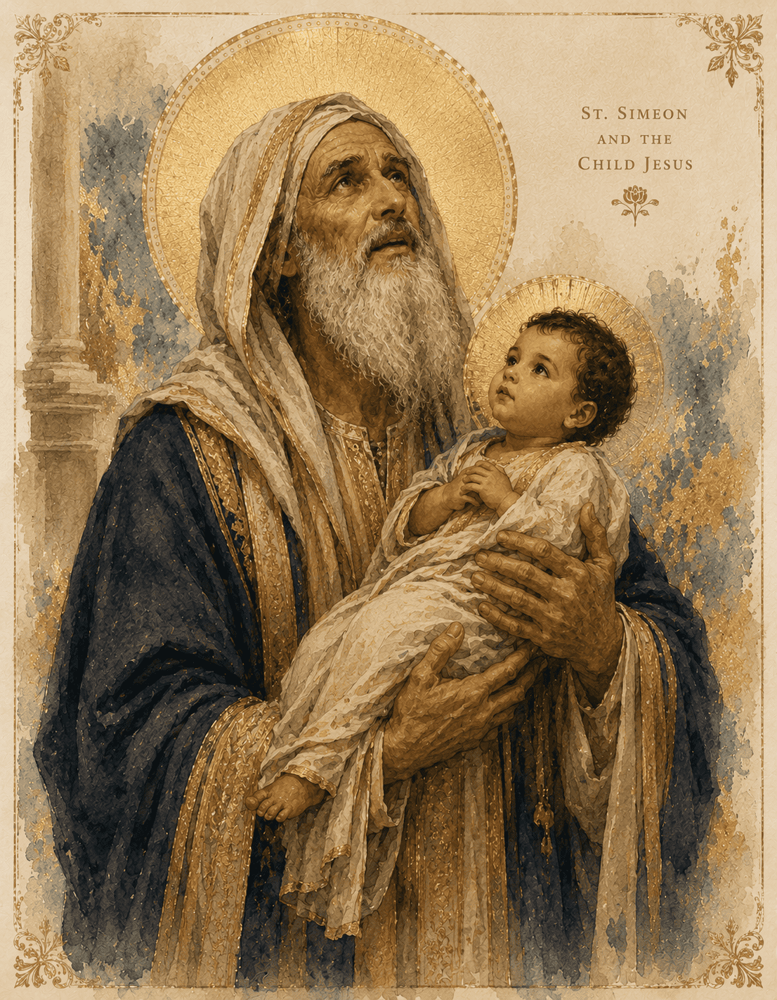
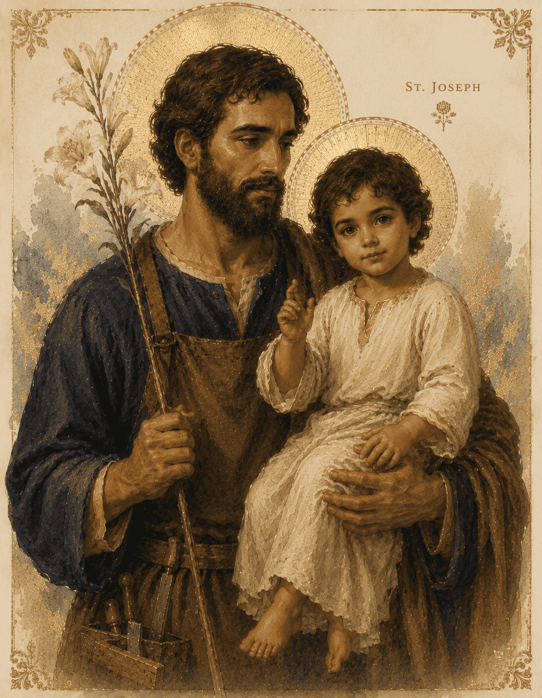

Homeschool Community
"The kingdom of heaven is like a mustard seed..."
— Matthew 13:31
Mustard Seed Homeschool Community is a small, Catholic, Classical learning community serving students in grades PreK through 8. Our community strives to cultivate wisdom and virtue by nourishing the soul on the True, the Good, and the Beautiful by means of the Seven Liberal Arts and the Sacred Scripture, Tradition, and Magisterium of the Catholic Church so that, in Christ, students come to know, love, and serve our Lord with abundant wonder and joy. We support the good things parents are already doing at home by offering half days with no homework, low-prep curriculum guides, equitable light volunteer roles, annual professional development, an annual spiritual retreat, and light pedagogical reading.
To Be Announced
To Be Announced
Details to be announced.
* This cost covers some but not all curriculum and supplies.
St. Thérèse
September – October

St. Simeon
November – January

St. Joseph
February – March
Begin our day with a morning offering. Moms go upstairs to prep while leaders review memory work with all students. Subjects include Baltimore Catechism questions, scripture related to sacramental interview questions, math multiples and formulas, grammar rules, ancient languages (Latin, Greek, Hebrew), science, and poetry.
Acts as a sponge trickling down over the rest of our subjects, orienting academic thoughts around our Lord. Resource options weekly: attending Eucharistic Adoration, reviewing sacramental prep questions, learning a virtue (Education in Virtue curriculum), scripture study, or reading TOBET readers with question guides for Theology of the Body.
Science: Weekly lab. Gathering around the lab with Moses' faith and curiosity: "I will see this great sight, how the bush does not burn." We come to know our Lord through His creation.
Math: Reinforcing essential math facts at every grade through games and activities.
Snack while studying liturgical seasons, ancient history through fine art & artist study, classical music & composer study, and poem & poet study. Grades 6–8 use Aristotle's 10 categories to describe artwork in commonplace books.
Letter sounds, sight words, phonics, spelling, reading buddies, read-alouds, Catholic copy work, intro Latin, basic speaking skills. (All About Reading, Gentle & Classical, Song School Latin)
T1: IEW (read article, outline, oral essay), Latin roots. T2: Readers' theater, impromptu speaking, Greek roots. T3: Virtue formation via Tales of Wonder, Hebrew prayers/terms.
CiRCE's Tapestry curriculum (Scripture narration, poetry, fairy tales, Aesop's fables). Intro to eight parts of speech, Latin lapbooks, public speaking intro.
T1: Harkness discussions on logical fallacies, Latin roots. T2: Readers' Theater (classical lit), Greek roots. T3: Saint research (living museum presentation), Hebrew prayers/terms.
Mustard Seed Homeschool Community is a Catholic, Classical homeschool community for PreK–8th grade families in Columbus, Ohio.
mustardseedhomeschoolcommunity@gmail.com